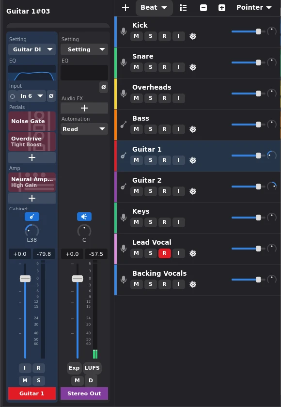

Guitar and bass
Guitar and bass, straight from the DI
Record clean and shape the tone afterwards: channel strips laid out as Pedals, Amp, Cabinet and Effects, Neural Amp Modeler and an impulse response loader built in, and re-amping through your interface.
A channel strip laid out like a rig
Most DAWs give a guitar track the same flat list of insert slots as a vocal. In Solstice, set an audio track's Strip Type to Guitar DI or Bass DI, from the strip's Setting menu or the track's right-click menu, and its inserts are drawn as four sections in signal order:
- Pedals: gates, boosts, drives, compressors.
- Amp: accepts only plug-ins in the Amp category.
- Cabinet: accepts only plug-ins in the Cabinet category.
- Effects: delay, reverb, anything after the cab.
Each section's + button lists only what belongs there, and dragging a plug-in somewhere that would put the chain out of order is refused, so a cab can't end up in front of the amp by accident. Each insert is drawn with a picture of what it is and, underneath, the capture or impulse response it's playing.
Changing the strip type never adds, removes or reorders anything. Existing inserts move into Effects, and you can drag them where they belong.

Four rigs ready to play through
The Setting menu at the top of every strip has factory settings that load a whole chain at once, EQ included. Four of them are built for DI'd guitar and bass:
| Setting | Pedals | Amp | Cabinet | Effects |
|---|---|---|---|---|
| Guitar Clean | Compressor, Gentle Levelling | Clean capture | 1x12 | Small Room reverb |
| Guitar Crunch | — | Crunch capture | 2x12 | Slapback delay, Small Room reverb |
| Guitar High Gain | Noise Gate, Guitar Amp Hum | High Gain capture | 4x12 | — |
| Bass | Compressor, Bass Even | Bass Drive capture | 1x15 bass cabinet | — |
Load one, then change whatever you like and save it as your own with "Save Channel Strip Setting…". Your settings appear in the same menu on every project.
Neural Amp Modeler, built in
Neural Amp Modeler plays captures of real amps and pedals: a .nam file is a trained model of one piece of gear at one setting, and it responds to your playing the way that amp did. Solstice runs the NAM core itself, so there's nothing extra to install.
- Input and Output levels, with a meter labelled "Into the capture" that turns red above 0 dB. Captures are sensitive to how hard you hit them, so this is the control that matters most. Presets for Single Coils, Humbuckers, Active Pickups and Bass set a sensible starting input.
- A capture library with Guitar and Bass folders, opening on Bass for a Bass DI strip. Import
.namfiles, or zips of them straight from a download, with the Import button or by dropping them on the window. "Open TONE3000" takes you to the community library of captures. - Projects keep their captures. The capture you choose is copied into the project, so a session opens with the same tone on another machine or after you've tidied your library.
- Any sample rate. A capture trained at a different rate from your session is resampled, and the latency that adds is reported, so delay compensation keeps the track in time.
Solstice installs four starter captures from the community NAM_models collection: Clean, Crunch and High Gain guitar amps, and a Bass Drive. Drop a .nam file on a Guitar DI strip's Amp label and Solstice adds an amp with that capture loaded.
Cabinets and rooms
An amp capture is usually just the head, so it needs a speaker cabinet after it. The Impulse Response loader plays a WAV recording of a cab, or of a room, mono or stereo.
- Responses are resampled to your session, trimmed of trailing silence and matched in loudness on load, so flicking between a 1x12 and a 4x12 compares the tone, not the volume.
- A frequency-response curve shows what the cab is doing to your sound.
- Level and Mix controls; at partial mix it doubles as a room or blend.
- Starter 1x12, 2x12, 4x12 and 1x15 bass cabinets, exported from Guitarix.
Drop WAV files on a strip's Cabinet label to add a loader with them in it.
Pedals in front
Overdrive
Voiced after the classic green overdrive: only the band above about 720 Hz is driven, while the low end passes clean. That's why the type tightens a high-gain amp instead of muddying it. The Tight Boost preset is set up for exactly that job in front of a capture. Drive, Tone and Level, oversampled to keep the clipping smooth.
Noise Gate
Threshold, Reduction, Attack, Hold and Release, with an open/closed light. The Guitar Amp Hum preset is tuned for high-gain hiss between riffs. It can also be keyed from another track, for example the DI'd rhythm guitar opening the gate on a doubled part.
Saturation
Tape, Tube and Hard modes with a tilt tone control, for grit on a bass or warmth on a bus. Its Bass Grit preset is a good start under a clean bass DI.
Your own amp sims fit in too
The Amp, Cabinet and Pedal categories aren't only for Solstice's plug-ins. Solstice recognises dozens of Linux guitar plug-ins out of the box, including the standalone Neural Amp Modeler builds, AIDA-X, Ratatouille, GuitarML's amps and pedals, ChowCentaur, BYOD, Guitarix, Ignite Amps and LSP's impulse response loader, and files them in the right sections. For anything else, right-click it in the Library and tick the categories you want.

Re-amping
Record the DI clean, and you can send it back out to a real amp later. Any track's Output menu lists the interface's outputs beyond the main pair, singly and in pairs. Point the DI at one, run a cable to a re-amp box and the amp, and record the mic'd amp back on a new track.
- Tracks sent to hardware outputs are left out of mix exports and bounces, so the dry DI never sneaks into your master.
- They're timed against the main outputs, and recording delay compensation (which you can measure with a loopback cable) lines the returning amp up with the rest of the song.